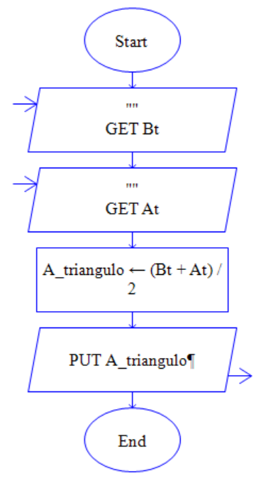

Las estructuras secuenciales son aquellas que se realizan una tras otra, es decir, no se pasa a la siguiente hasta no haber realizado la anterior. Entre ellas se encuentran:
Estructura Inicio – Fin
Esta estructura permite delimitar la solución del problema de la siguiente forma utilizando la representación gráfica diagrama de flujo de datos utilizando una herramienta llamada DFD portable así:
Pseudocodigo |
Dfd |
|
Inicio Instrucciones; Fin |
Estructuras De Entrada
Las estructuras de entrada permiten ingresar datos al programa a través del teclado.
Pseudocodigo |
Dfd |
|
Leer Nombre de la variable;
Ejemplo Leer N; |
 |
Estructuras De Salida
Las estructuras de salida permiten mostrar datos o resultados en pantalla a los usuarios.
Pseudocodigo |
Dfd |
|
Escribir “Mensaje”, Variable
Ejemplo Escribir “El resultado es”, N; |
 |
Operador Asignación
Este operador tiene gran importancia para plantear la solución a un problema, debido a que permite guardar valores en la variable.
Se debe tener en cuenta que en una solución algorítmica los datos o expresiones matemáticas deben ser guardadas en las variables utilizando este operador, y se representa por el siguiente símbolo: ß, =
Pseudocodigo |
Dfd |
|
El operador se representa en pseudocódigo de la siguiente forma: a1 <- 2+3 b <- a1+4 |